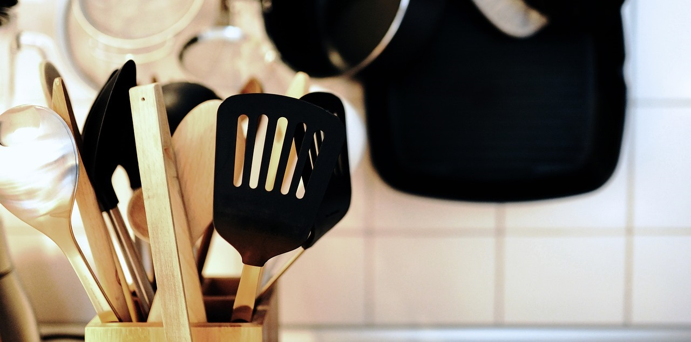

Entdecke, wie du deine Pasta mit fünf einfachen, aber
wirkungsvollen Tipps auf das nächste Level hebst. Vom perfekten
Kochzeitpunkt bis hin zu den besten Tricks für das Anrichten –
dieser Blog-Eintrag bietet dir praktische Ratschläge, um jedes
Mal köstliche, al dente Pasta zu zaubern. Ob du ein erfahrener
Koch oder ein Anfänger bist, unsere Tipps helfen dir, ein wahres
Pasta-Meisterwerk zu kreieren. Lies weiter, um deine Kochkünste
zu verbessern und deinen Geschmacksknospen ein Festmahl zu
bieten!
Weiterlesen

Erlebe die Magie des Grillens mit unserem umfassenden Leitfaden,
der dich durch die wichtigsten Techniken und Geheimnisse des
Grillens führt. Von der Auswahl des richtigen Grillgeräts bis
hin zu den besten Marinaden und dem perfekten Timing – unser
Blog-Eintrag deckt alles ab, was du wissen musst, um dein
Grillmeisterwerk zu vollenden. Egal, ob du ein BBQ-Neuling oder
ein erfahrener Grillprofi bist, dieser Leitfaden bietet dir
wertvolle Tipps und Tricks für saftige Steaks, zarte Rippchen
und köstliches Gemüse. Bereite dich darauf vor, deine
Grillfähigkeiten auf das nächste Level zu heben!
Weiterlesen

Mach Mahlzeiten zu einem gesunden und köstlichen Erlebnis für
die ganze Familie mit unseren ausgewählten Rezepten! In diesem
Blog-Eintrag findest du eine Reihe von leckeren und
nährstoffreichen Rezepten, die sowohl den kleinen als auch den
großen Appetit stillen. Von schnellen Frühstücksideen bis hin zu
vollwertigen Abendessen – unsere Rezepte sind darauf ausgelegt,
gesunde Ernährung in den Alltag zu integrieren, ohne dabei den
Geschmack zu kompromittieren. Entdecke kreative und einfache
Gerichte, die jedem Familienmitglied gefallen werden und genieße
gesunde Mahlzeiten, die Freude und Wohlbefinden bringen.
Weiterlesen

Starte dein Kochabenteuer richtig mit unserem Leitfaden zu den
besten Küchenwerkzeugen für Einsteiger! In diesem Blog-Eintrag
stellen wir dir die unverzichtbaren Utensilien vor, die jede
Küche braucht, um effizient und erfolgreich zu kochen. Von der
Auswahl des richtigen Messers bis zu praktischen Geräten, die
den Kochprozess erleichtern – wir decken alles ab, was du wissen
musst, um gut gerüstet in deine kulinarische Reise zu starten.
Perfekt für Neueinsteiger oder diejenigen, die ihre
Küchenausstattung optimieren möchten. Hol dir die besten Tipps
und Empfehlungen für Küchenwerkzeuge, die dir helfen, jedes
Gericht mit Leichtigkeit zuzubereiten!
Weiterlesen
Tauche ein in die Kunst des Suppenkochens und entdecke die
Geheimnisse, die deine Suppen zu einem echten Highlight machen!
In diesem Blog-Eintrag teilen wir bewährte Tipps und Tricks, um
die perfekte Suppe zu zaubern, die nicht nur geschmacklich
überzeugt, sondern auch deine Sinne verwöhnt. Von der Wahl der
besten Zutaten und Gewürze bis hin zur richtigen Kochtechnik –
unser Leitfaden hilft dir, jedes Mal eine köstliche und
aromatische Suppe zu kreieren. Ideal für Anfänger und erfahrene
Köche, die ihre Suppenkünste perfektionieren möchten. Lass dich
inspirieren und lerne, wie du jede Suppe zum Meisterwerk machst!
Weiterlesen